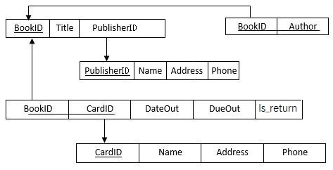

试设计如图3-2中显示的数据库模式Library，用来记录书籍、借书
试设计如图3-2中显示的数据库模式Library，用来记录书籍、借书人和书籍借出的情况，参照完整性在图中用有向弧来表示。请用SQL语言建立图中的关系模式，并完成下列操作：
参考答案用于学习与核对

CREATE TABLE PUBLISHER
(
NAME CHAR(20) PRIMARY KEY,
ADDRESS CHAR(30),
PHONE CHAR(12)
);
CREATE TABLE BOOK
(
BOOKID CHAR(4) PRIMARY KEY,
TITLE CHAR(20),
PUBLISHERNAME CHAR(20) REFERENCES PUBLISHER(NAME)
);
CREATE TABLE AUTHOR
(
BOOKID CHAR(4) REFERENCES BOOK(BOOKID),
AUTHOR CHAR(8),
PRIMARY KEY(BOOKID)
);
CREATE TABLE BORROWER
(
CARDID CHAR(4) PRIMARY KEY,
NAME CHAR(8),
ADDRESS CHAR(30),
PHONE CHAR(12)
);
CREATE TABLE BORROW
(
BOOKID CHAR(4) REFERENCES BOOK(BOOKID),
CARDID CHAR(4) REFERENCES BORROWER(CARDID),
DATEOUT DATETIME,
DUEOUT DATETIME,
IS_RETURN BOOL,
PRIMARY KEY (BOOKID,CARDID);
)
⑴ 查询“高等教育出版社”出版的所有图书名称和编号。
SELECT BOOKID,TITLE
FROM BOOK
WHERE PUBLISHERNAME=’高等教育出版社’;
⑵ 查询所有作者是“郭雨辰”的图书的编号和名称。
SELECT BOOKID,TITLE
FROM BOOK
WHERE BOOKID IN
(SELECT BOOKID
FROM AUTHOR
WHERE AUTHOR=’郭雨辰’);
⑶ 查询“王丽”借过的所有图书的名称。
SELECT TITLE
FROM BOOK
WHERE BOOKID IN
(SELECT BOOKID
FROM BORROW
WHERE CARDID IN
(SELECT CARDID
FROM BORROWER
WHERE NAME=’王丽’);
⑷ 查询“李明”在2018年上半年期间借过的图书名称。
SELECT TITLE
FROM BOOK
WHERE BOOKID IN
(SELECT BOOKID
FROM BORROW
WHERE DATEOUT BETWEEN ‘2018/1/1’AND ‘2018/6/30’ AND CARDID IN
(SELECT CARDID
FROM BORROWER
WHERE NAME=’李明’);
⑸ 建立视图，显示2017年期间没有被人借过的图书编号和名称。
CREATE VIEW UNPOPULARBOOK
AS
SELECT BOOKID,TITLE
FROM BOOK
WHERE BOOKID NOT IN
(SELECT BOOKID
FROM BORROW
WHERE DATEOUT BETWEEN‘2017/1/1’ AND‘2017/12/31’);
⑹ 建立超期未归还书籍的视图，显示图书编号和名称，以及借书人姓名和电话。
CREATE VIEW DELAY
AS
SELECT BOOKID, TITLE, NAME, PHONE
FROM BOOK, BORROW, BORROWER
WHERE BOOK.BOOKID = BORROW.BOOKID AND
BORROW.CARDID = BORROWER.CARDID AND
IS_RETURN = false;
⑺ 建立热门书籍的视图，显示2017年期间借出次数最多的10本图书名称。
CREATE VIEW POPULARBOOK
AS
SELECT TOP 10 TITLE
FROM BOOK,BORROW
WHERE BOOK.BOOKID=BORROW.BOOKID AND
DATEOUT BETWEEN '2017/1/1' AND '2017/12/31'
GROUP BY TITLE
ORDER BY COUNT(TITLE) desc
⑻ 增加新书《大数据》，书号为“TP319-201”，该书由“广西师范大学出版社”出版，作者为“涂子沛”。
INSERT INTO BOOK
VALUES(‘TP319-201’, ‘大数据’, ‘广西师范大学出版社’);
INSERT INTO AUTHOR
VALUES(‘TP319-201’, ‘涂子沛’);
⑼ 将“高等教育出版社”的电话改为“010－64054588”。
UPDATE PUBLISER
SET PHONE=010-64054588
WHERE NAME=’高等教育出版社’;
⑽ 删除书号为“D001701”的书籍信息。
DELETE
FROM BOOK
WHERE BOOKID=’ D001701’;